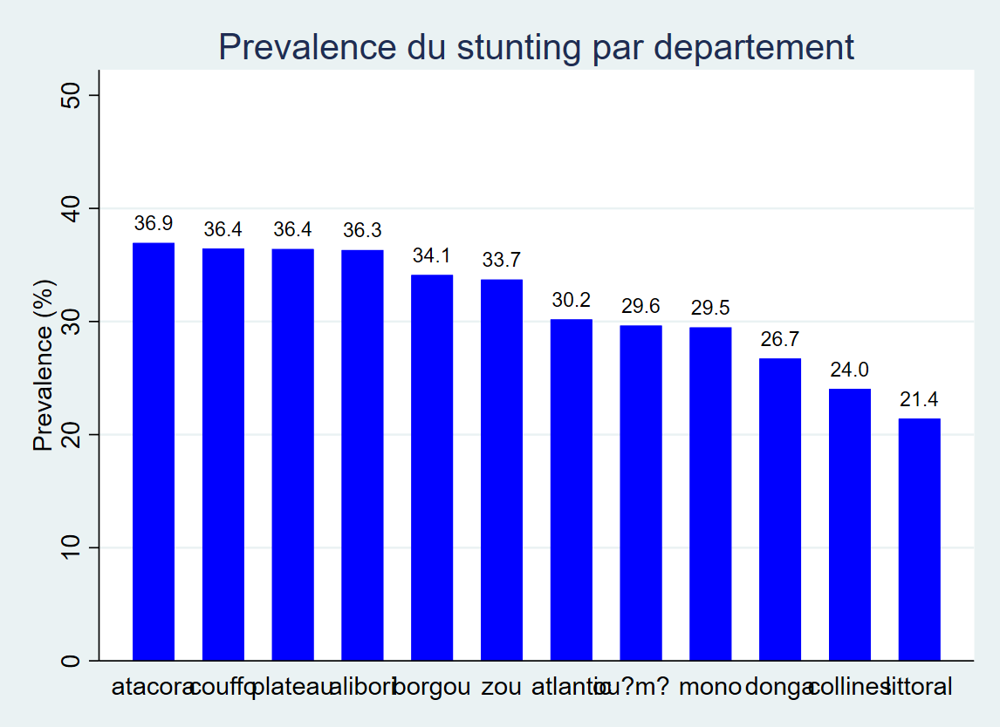
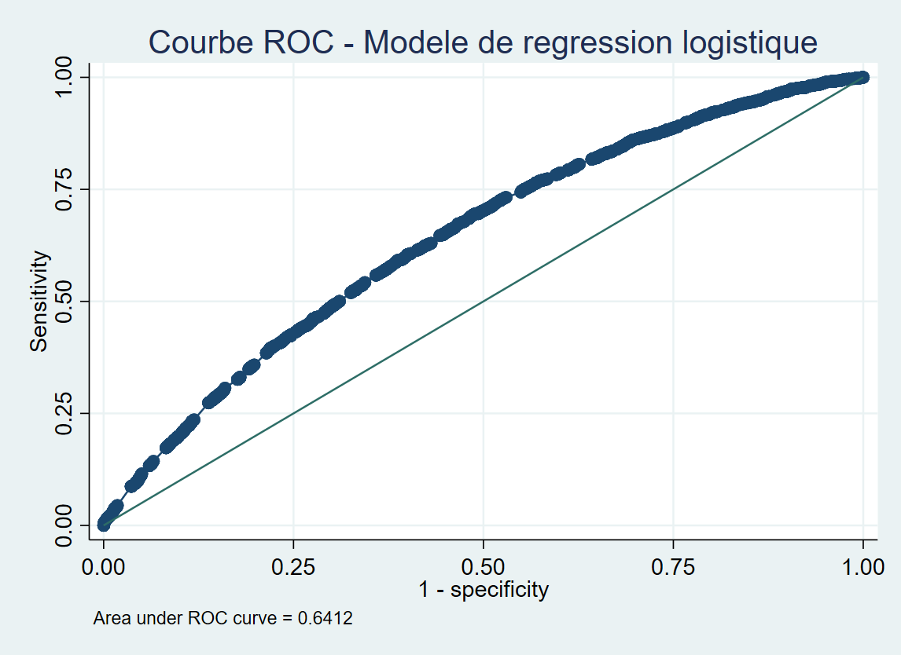

Statistique appliquée
Utilisation des méthodes statistiques pour décrire des phénomènes, étudier des relations entre variables et interpréter les résultats.
Je suis diplômé en statistique appliquée de l'ENSPD, à l'Université de Parakou. Je travaille sur l'analyse de données, les méthodes statistiques, l'économétrie et les séries temporelles. Je m'intéresse particulièrement aux applications de la statistique dans l'économie, la santé et les politiques publiques.
Analyse de données, modélisation statistique, économétrie et prévision.
Choisissez une rubrique pour ouvrir directement la page correspondante.
Ma formation m'a permis d'acquérir des connaissances en analyse statistique, en économétrie et en traitement des données. Je souhaite approfondir ces compétences à travers des projets concrets et la poursuite de mes études.
Utilisation des méthodes statistiques pour décrire des phénomènes, étudier des relations entre variables et interpréter les résultats.
Préparation des bases, exploration des données, analyses quantitatives et présentation des principaux résultats.
Étude des indicateurs économiques, analyse conjoncturelle, économétrie et prévision à partir de données.
ENSPD, Université de Parakou, Bénin
Formation en probabilités, statistique descriptive et inférentielle, méthodes d'enquête, économétrie, analyse de données et utilisation d'outils informatiques pour les travaux statistiques.
Projet de poursuite d'études : Master en statistique appliquée, économétrie ou Data Science.
Les méthodes et outils que j'utilise dans mes travaux statistiques.
Préparation des questionnaires, organisation de la collecte et structuration des bases de données.
Nettoyage, apurement, vérification de cohérence et préparation des données avant analyse.
Statistiques descriptives, tests d'hypothèses, régression et analyse quantitative.
Analyse des tendances, étude des indicateurs économiques et modélisation de leur évolution dans le temps.
Organisation des résultats et préparation de tableaux, graphiques et supports de présentation.
Utilisation d'outils de programmation et d'analyse pour conduire les traitements statistiques.
Une démarche structurée pour produire des résultats clairs et utiles à la décision.
Préciser l'objectif de l'étude et les indicateurs à analyser.
Vérifier la qualité, les formats et la cohérence des observations.
Choisir les méthodes statistiques adaptées à la question.
Contrôler les hypothèses et la qualité des résultats obtenus.
Interpréter les résultats et formuler des conclusions prudentes.
Un aperçu des sujets sur lesquels je travaille : analyse quantitative, outils de gestion et aide à la décision.
Analyse des indicateurs économiques, séries temporelles et prévision de l'inflation à partir des données de l'IHPC.
Conception en cours de matrices de décision, modèles budgétaires, outils de contrôle budgétaire et systèmes de suivi décisionnel.
Expérience en collecte, contrôle d'enquête, coordination d'équipe et contribution à l'élaboration de rapports.
Des expériences en statistiques économiques et sanitaires, en collecte d'informations et en développement d'outils de gestion.
Ministère de l'Économie et des Finances, Bénin
SPAF · Direction départementale de la Santé du Borgou (DDS-B)
Université de Parakou
Boutique Aiwibi Aiwina
Mes travaux sont présentés selon leur état d'avancement : études et outils en cours de développement, puis réalisations déjà menées à terme.
8 projets affichés.
Analyses et outils en développement, avec une attention particulière aux données économiques et à l'aide à la décision.
Analyse de l'Indice harmonisé des prix à la consommation (IHPC) et modélisation ARIMA pour étudier son évolution et produire des prévisions.
Statut : analyse en cours de développement.
Découvrir l’étude →Étude économétrique de la relation entre le PIB courant et l'investissement sur la période 1999–2025, avec préparation des séries et tests préalables à la modélisation.
Statut : analyse exploratoire et économétrique.
Découvrir l’étude →Conception d'une matrice d'analyse pour comparer des projets d'investissement à partir de critères définis et organiser les informations utiles à la décision.
Statut : prototype d'analyse.
Objectif : structurer la comparaison de projets publics à partir de critères explicites.
Démarche :
Outil : Python / Google Colab. Les résultats dépendront des critères et des données effectivement disponibles.
Développement de matrices structurées pour comparer plusieurs options selon des critères définis et faciliter la justification des choix.
Statut : travail en cours de développement.
Objectif : rendre les comparaisons plus transparentes et reproductibles.
Livrable visé : une matrice réutilisable avec une documentation des choix méthodologiques.
Conception de modèles budgétaires et d'outils de contrôle permettant de structurer les prévisions, suivre les écarts et organiser les informations budgétaires.
Statut : travail en cours de développement.
Conception progressive d'un système de suivi regroupant des indicateurs clés pour visualiser l'avancement, repérer les écarts et soutenir la prise de décision.
Statut : concept et outils en cours d'élaboration.
Objectif : regrouper des indicateurs pour suivre l'avancement d'activités ou de décisions.
Livrable visé : un outil de suivi simple, documenté et actualisable.
Travaux académiques et outils déjà réalisés, présentés avec leur portée réelle.
Étude fondée sur l'EDS Bénin 2017–2018 pour analyser les facteurs associés à la malnutrition infantile à l'aide de statistiques descriptives, de tests du Chi-deux et d'une régression logistique.
Statut : mémoire de Licence réalisé.
Découvrir l’étude →Création d'un outil de suivi d'inventaire pour la boutique Aiwibi Aiwina, avec une organisation des données destinée à faciliter le contrôle des articles.
Statut : outil créé.
Objectif : faciliter l'organisation et le contrôle des articles d'une boutique.
Compétences mobilisées : structuration des données, logique de suivi et organisation d'un outil pratique.
Analyse de la série de l’Indice harmonisé des prix à la consommation (IHPC) et application d’une démarche de modélisation ARIMA pour étudier l’évolution de l’indicateur et produire des prévisions.
Comment décrire l’évolution de l’indicateur d’inflation étudié à partir des données IHPC disponibles et quelle trajectoire le modèle statistique estime-t-il pour la période de prévision ?
Le modèle retenu est un ARIMA(2,0,0). Le test de Ljung–Box donne une p-value de 0,4936 ; selon le seuil usuel de 5 %, ce résultat ne met pas en évidence d’autocorrélation résiduelle statistiquement significative dans le diagnostic réalisé.
Dans les prévisions calculées, l’indicateur se stabilise autour de 1,72 % à partir de mai 2027 et reste à ce niveau approximatif jusqu’à décembre 2028. Il s’agit d’une projection produite par le modèle, et non d’une valeur observée ni d’une certitude sur l’évolution future.
Analyse exploratoire et économétrique de l’évolution du PIB courant et de l’investissement sur la période 1999–2025, à partir de séries macroéconomiques transformées en logarithmes.
Comment les séries du PIB courant et de l’investissement évoluent-elles sur longue période, et quelles vérifications économétriques doivent être réalisées avant d’estimer une relation entre elles ?
Les p-values rapportées pour les tests ADF sur les premières différences sont inférieures à 5 %, ce qui appuie le rejet de l’hypothèse de racine unitaire pour les séries différenciées dans les spécifications testées.
Ces vérifications constituent une étape préalable : elles ne démontrent pas à elles seules une relation causale entre investissement et PIB. Une conclusion sur une relation de long terme nécessiterait notamment des tests adaptés de cointégration et une spécification économétrique appropriée.
Travail de recherche réalisé dans le cadre de la Licence en Statistique appliquée, à partir des données de l’Enquête démographique et de santé du Bénin 2017–2018.
Décrire les formes de malnutrition chez les enfants de moins de cinq ans et étudier les facteurs qui leur sont statistiquement associés à partir des données de l’EDS.
Cette recherche montre comment des données d’enquête nationales peuvent servir à décrire un problème de santé publique et à examiner les facteurs associés à l’état nutritionnel des enfants. Elle met en pratique plusieurs étapes d’une analyse statistique, depuis la préparation et l’exploration des données jusqu’à la modélisation et à l’évaluation des résultats.
Source des données : Enquête démographique et de santé (EDS), Bénin 2017-2018.
Le travail porte sur les formes de malnutrition chez les enfants de moins de cinq ans et l'étude des facteurs associés à partir de données d'enquête.
Méthodes : statistiques descriptives, tests du Chi-deux, régression logistique binaire, test de Hosmer-Lemeshow et courbe ROC.
Les résultats présentés résument les analyses réalisées dans le cadre du mémoire.

Source : EDS Bénin 2017-2018, à confirmer pour ce graphique.

Interprétation descriptive des performances du modèle.
Retrouvez mes profils en ligne et les informations relatives à mon parcours.
Centres d'intérêt : statistique appliquée, économétrie, séries temporelles, santé publique, politiques publiques et science des données.
Pour une opportunité professionnelle, une collaboration ou un échange autour d'un projet d'analyse, vous pouvez me joindre directement ou consulter mes profils.